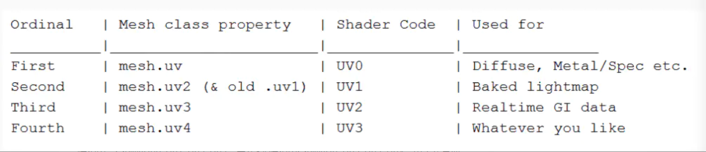

Overview
纹理最初的目的就是使用一张图片来控制模型的外观。使用纹理映射（texture mapping）技术，我们可以把一张图“黏”在模型表面，逐纹素（texel）（纹素的名字是为了和像素进行区分）地控制模型的颜色。
UV坐标
纹理映射坐标（texture-mapping coordinates） / UV坐标： 存储在每个顶点上，定义了该顶点在纹理中对应的2D坐标。通常，这些坐标使用一个二维变量(u，v)来表示，其中u是横向坐标，而v是纵向坐标。
顶点UV坐标的范围通常都被归一化到[0，1]范围内。
在OpenGL里，纹理空间的原点位于左下角，而在DirectX中，原点位于左上角。Unity使用的纹理空间是符合OpenGL的传统的
uv, uv2, uv3, uv4

unity一共支持4套uv，在shader编程中，分别叫UV0, UV1, UV2, UV3，而在c＃编程中分别叫uv, uv2, uv3, uv4。
通常来说(使用c# API中的命名)，uv用于主纹理, uv2用于光照贴图(Lightmap)的采样, uv3用于实时动态光照, uv4可进行自定义。
uv2可以在建模软件中添加，也可以在Unity中通过Generate Lightmap UVs的选项来生成。如果在建模软件中只做了一套uv，将模型导入unity的时候，在导入设置中勾选Generate Lightmap UVs, unity会自动为我们生成用于光照贴图的uv2。uv3和uv4的使用较为少见，通常是用来配合特殊的Shader实现特殊的效果。
3DMax和maya等软件都能对模型加多套uv
注意模型在fbx里可以保留多套uv，但是obj里只能保留默认的第一套
另外unity里现在貌似支持最多四套
清除不必要的UV通道
某些时候，因为美术的一些意外操作，会引入多个我们不需要的UV通道。
由于unity的光照贴图会自动占用uv2通道，如果你的项目中又使用的是动态加载光照贴图的方式的话，最好不要在导入模型的时候把UV2设置为null，如果你这样做了有可能会导致光照贴图显示不出来的问题。
如果物体不需要烘培，你自己也不使用uv2，则可以删除该通道。
1 | //删除color和uv |
属性
Texture Type
Default 默认的纹理类型，普通的图片
Normal map 法线贴图
【关于法线贴图：就是看起来与3D效果无异的2D贴图】
游戏场景中譬如雕刻这种3D细节，如果做3D模型的话，就会浪费显示芯片，使游戏性能下降，便会用法线贴图，既不影响玩家体验游戏又不影响游戏性能
Editor GUI and Legacy GUI GUI编辑器用到的UI贴图
Sprite(2D and UI) 图片精灵，主要用于2D游戏中，把一张大的图分割成一张张小图，大的图叫图集atlas,
小的图叫精灵sprite,可以通过精灵名字来使用精灵.
Cursor 鼠标或者叫光标的贴图
Cubemap 立方体的纹理
Cookie 遮罩贴图 聚光灯贴图
Lightmap 光照或者叫烘焙贴图
Advanced 高级(可自定义一些贴图属性)
Alpha Source (α通道来源)
- None：强制无α通道。
- Input Texture Alpha：使用纹理自带的α通道。
- From Gray Scale：使用纹理RGB通道的均值来生成α通道。
Alpha Is Transparen
当alpha用于透明处理时，我们要勾上该选项，可以防止不透明边缘锯齿现象
性”alpha is transparency”，原理是在压缩之前对贴图进行颜色放大处理来搞定边缘锯齿问题，这个颜色放大处理等同于ps里的最小值滤镜操作，对图片边缘做强化处理。
一个坑：（http://blog.coolcoding.cn/?p=198）
如果有一张PNG图片, 95%的地方是全透明的,而在全透明的地方,RGB值是有意义的;
如果设置了alphaIsTransparency属性,则全透明的地方,Unity会将RGB值全部丢失!!!
如果要使用此纹理的4个通道做数据存储时(比如地型的4通道混合)
千万不能勾选alphaIsTransparency属性
除非此PNG图片仅仅用于UI显示。
Advanced
Non Power of 2：NPOT的处理方式。
Read/Write Enabled：读写开关，非必要不开启，否则会增加一倍的 内存。
Generate Mip Maps：生成Mip Maps，会增加33%的内存。一般用 于模型纹理，UI、天空盒等纹理不需要开启。
Border Mip Maps：防止低阶的Mip Map的色彩值溢出边界，一般用 于光照Cookie。
Mip Map Filtering：过滤算法，Box和Kaiser。
Fadeout Mip Maps：根据层阶使Mip Map慢慢变灰，一般用于细节 贴图（DetailMaps）。
Wrap Mode
Wrap mode determines how texture is sampled when texture coordinates are outside of the typical 0..1 range.
这由纹理的映射函数来决定。在OpenGL中，这类映射函数称为“Texture Wrapping Mode”；在D3D中，称为“Texture Addressing Mode”。
Repeat 重复
Tiles the texture, creating a repeating pattern.
When UVs are outside of the 0…1 range, the integer part will be ignored, thus creating a repeating pattern.
在算法上，忽略纹理坐标的整数部分，并将纹理图的拷贝粘贴在物体表面上。对于大多数复制纹理的使用，在纹理顶部的纹理单元应与底部的纹理单元相匹配，在纹理左侧的纹理单元也应与右侧的纹理单元相匹配。这样才能做到无缝连接。
Clamp 拉伸
makes the texture edge pixels be stretched when outside of of 0..1 range.
This is useful for preventing wrapping artifacts when mapping an image onto an object and you don’t want the texture to tile. UV coordinates will be clamped to the range 0…1. When UVs are larger than 1 or smaller than 0, the last pixel at the border will be used.
将大于1.0的数值设置为1.0，将小于0.0的数值设置为0.0，即将超出[0.0,1.0]范围的数值截取到[0.0,1.0]范围内，这样会导致纹理边缘的重复。
Mirror
Tiles the texture, creating a repeating pattern by mirroring it at every integer boundary.
Mirror Once
Mirrors the texture once, then clamps to edge pixels.
This effectively mirrors the texture around zero UV coordinates, and repeats edge pixel values when outside of [-1..1] range.
This mode is called “mirror and clamp to edge” in graphics APIs like Vulkan, Metal and OpenGL. This feature is not always supported when using OpenGL ES and Vulkan graphics APIs, specifically on ARM and Qualcomm GPUs platforms. Check SystemInfo.supportsTextureWrapMirrorOnce to figure out whether the system is capable..
Per-axis
Choose this to individually control how Unity wraps Textures at the U axis and V axis.
Filter Mode
控制纹理通过三维变换拉伸的计算(过滤)方式
Point：最近点采样，当纹理坐标没有刚好对应Texture上的一个采样点时，它会选择最近的一个采样点作为该坐标的采样值，
当纹理没有拉伸变形时，这样还不错，因为速度是最快的，但如果拉伸变形了，会出现马赛克现象。
Bilinear：双线性过滤，以像素对应的纹理坐标为中心，采样它周围4个texel（纹素）的像素，取平均值作为该坐标采样值。这是Unity默认的模式，过渡效果相对平滑，当然速度会比最近点采样有一定下降。会有模糊化现象。
Trilinear：三线性过滤，会对像素大小和纹素大小最接近的两层Mipmap level分别进行双线性过滤，再对结果进行线性插值。由于使用了两次双线性过滤，也就是计算2x4=8个像素的值，速度会更加下降，当然滤波效果更好。同上也会有模糊化现象。
Aniso Level
各向异性级别。当以一个过小的角度观察纹理时，此数值越高观察的纹理质量就越高，该参数对于提高地面等纹理的显示效果非常明显。
Default 点了没效果不能重置所有设置，还是得手动选择.废弃的按钮
对不同平台的压缩设置
- Max Size：最大尺寸。
- Compression：压缩质量。
- Format：压缩格式。
格化式存储该纹理的类型，纹理的精度越高，占用的内存越大，得到的效果也越好 - Compressed 默认压缩方式,PVRTC图片格式，压缩选项将会针对你的目标平台来选择最合适的压缩算法替换原来的我们给的图片格式(比如我们给的是PNG格式)。
16 bits 无压缩16位格式，比32位节省一半的空间和内存。
Truecolor 无压缩32位以上真彩色,适合对色彩要求较高的情况下使用，比较占空间和内存。 - Compressor Quality：压缩质量
- Use Crunch Compression：紧凑压缩
Crunched 这种类型将会根据显卡的GPU来选择合适的压缩格式进行压缩然后会选用一种CPU上就能处理的压缩格式再压缩一遍。如果在制作供人下载的资源包的时候这种类型非常的合适。这个类型的压缩需要很长时间，但在运行时解压是非常快的。
其他纹理类型设置
Normal Map
与Default相比增加了一下设置：
Create from Grayscale：从灰度高度图（Heightmap）创建。
Bumpiness：崎岖度。
Filtering：滤波算法。
- Smooth：平滑，标准前向差分算法。 2. Sharp：尖锐，Sobel滤波器。
Sprite
与Default相比增加了一下设置：
Sprite Mode：精灵模式。
- Single：单图。
- Multiple：多图。
- Polygon：多边形，在SpriteEditor里使用多边形裁剪精灵。
PackingTag：指定图集。
PixelsPer Unit：每单位像素数，在世界场景中，每单位距离有多少个 像素。
Mesh Type：网格类型（Polygon模式无此属性）。
- FullRect：矩形。 2. Tight：紧凑的，根据Alpha通道生成Mesh。（2DObject）
ExtrudeEdge：拉伸边缘。
Cookie
Cookie类型的纹理设置
与Default相比增加了一下设置：
Light Type：光照类型。
- Spotlight：聚光灯，形状必须为2D。
- Directional：平行光，形状必须为2D。
- Point：点光源，形状必须为立方体。
Sprite及图集的使用
只有Sprite模式的图片才可以打包成图集
旧版：
Sprite Mode 设置为 Muitiple 设置Packing Tag
Window->Sprite Packer –>点击 Pack 即可
新版：
Project Setting -> Editor -> Sprite Packer -> Mode = Always Enabled
新建 Sprite Atlas
选择打包图集的文件夹或者依次添加单独图片，点击Pack Preview后自动打包成一个图集
代码获取图集并动态选择Sprite：1
2
3
4
5
6
7
8
9
10
11
12
13
14
15
16
17using UnityEditor;
using UnityEngine;
using UnityEngine.U2D;
using UnityEngine.UI;
public class SpriteAtlasExample : MonoBehaviour
{
private void Awake()
{
SpriteAtlas atlas = AssetDatabase.LoadAssetAtPath<SpriteAtlas>("Assets/TestAtlas.spriteatlas");
Sprite sprite = atlas.GetSprite("Icon2");
if (sprite != null)
{
GetComponent<Image>().sprite = sprite;
}
}
}
压缩格式相关
图像文件格式
文件格式是图像为了存储信息而使用的对信息的特殊编码方式，它存储在磁盘中，或者内存中，但是并不能被GPU所识别，因为以向量计算见长的GPU对于这些 复杂的计算无能为力。这些文件格式当被游戏读入后，还是需要经过CPU转换成图形硬件支持的格式，再传送到GPU端进行使用。
常用的图片格式及特点如下：
- JPG 有损压缩 文件小 不支持透明
- PNG 无损压缩 文件小 支持透明
- TAG 无损压缩 文件大 支持透明
- DDS 无损压缩 文件最小 支持透明
不同格式的本质区别在于压缩算法不一样，结果图片大小，还原度也各不相同。
TIFF（Tag Image File Format）文件是由Aldus和Microsoft公司为扫描仪和桌上出版系统研制开发的一种较为通用的图像文件格式。TIFF格式灵活易变，同时定义了四类不同的格式：TIFF－B适用于二值图像；TIFF－G适用黑白灰度图像；TIFF－P适用于带调色板的彩色图像；TIFF－R适用于RGB真彩图像。TIFF支持多种编码方法，其中包括RGB无损压缩、RLE压缩以及JPEG压缩等。
GIF（Graphics Interchange Format ）是CompuServe公司在1987年开发的图像文件格式。GIF文件的数据是经过压缩的，它采用了可变长度的压缩算法。GIF的图像深度从1 bit到8 bit，也即GIF最多支持256种色彩的图像。GIF格式的另一个特点是其在一个GIF文件中可以存多幅彩色图像，如果把存于一个文件中的多幅图像数据逐幅读出并显示到屏幕上，就可构成一种最简单的动画。
3D 图形硬件支持的压缩格式
JPG, PNG, PSD are not used during realtime rendering by 3D graphics hardware such as a graphics card or mobile device. 3D graphics hardware requires Textures to be compressed in specialized formats which are optimised for fast Texture sampling . The various different platforms and devices available each have their own different proprietary formats.
By default, the Unity Editor automatically converts Textures to the most appropriate format to match the build target you have selected. Only the converted Textures are included in your build; your source Asset
files are left in their original format, in your project’s Assets folder.
如果发现GPU不支持当前压缩格式，Unity就会将纹理转换成RGB（A），首先是解压过程的消耗，其次是内存中会保存两个纹理。
简单纹理格式
RGBA8888 每个像素4字节，RGBA通道各占用8位
RGBA4444 每个像素2字节，RGBA通道各占用4位
RGB888 每个像素3字节，RGB通道各占用8位，无透明通道
RGB565 每个像素2字节，RGB通道各占用5/6/5位，无透明通道
RGBA5551 每个像素2字节，RGB通道各占用5位，透明通道1位，所以要么完全透明要么不透明
所有设备对RGB 16BITS/ARGB 16BITS/RGB A16BITS/RGB 24BITS/ARGB 32BITS等支持都很好，只是这些格式算是非压缩格式，对内存消耗和渲染消耗非常不友好。
压缩格式
- DXT - 有损压缩方式
- ETC - （Ericsson Texture Compression），在移动平台中广泛采用。它是一种为感知质量设计的有损算法，其依据是人眼对亮度改变的反应要高于色度改变。
- ETC1：安卓原生支持，在各种Android设备上非透明纹理都可以采用ETC1格式。ETC1不支持透明，对于透明纹理，在Android设备上，可以把RGB和Alpha拆到2张ETC1纹理上，游戏中再合成使用。
- ETC2是ETC1的扩张，向后兼容ETC1，对RGB的压缩质量更好，并且支持透明通道。ETC2比ETC1压缩质量更高，而且支持透明，在Android设备上再也不需要打不同纹理格式的包了。不过需要OpenGL ES 3.0以上才可以，目前很多设备只支持OpenGL ES 2.0。
- PVRTC（PowerVR Texture Compression） - 压缩比高，也是有损压缩。iOS只支持PVRTC的压缩格式。
关于压缩后的在储存上的大小，假设高清(ARGB32)大小为1，那么大概数据如下：1
2
3
4
5
6
7
8
9
10
11
12
13RGB PVRTC 4BITS:0.25
ARGB PVRTC 4BITS:0.25
RGB PVRTC 2BITS:0.13
ARGB PVRTC 2BITS:0.13
RGBA ETC2 4BITS:0.25
RGBA ETC2 8BITS:0.25
RGB + 1-bit ALPHA ETC2 8BITS:0.2
DXT1 :0.3
DXT5 : 0.6
ARGB 16BITS:0.33
RGB 16BITS:0.5
RGB 24BITS:0.85
ARGB 32BITS:1
内存中的大小，假设高清(ARGB32)大小为1，那么大概数据如下：1
2
3
4
5
6
7
8
9
10
11
12
13RGB PVRTC 2BITS:0.0625
ARGB PVRTC 2BITS:0.0625
RGB PVRTC 4BITS:0.125
ARGB PVRTC 4BITS:0.125
RGBA ETC2 4BITS:0.125
RGBA ETC2 8BITS:0.25
RGB + 1-bit ALPHA ETC2 8BITS:0.125
DXT1 : 0.125
DXT5 : 0.25
ARGB 16BITS:0.5
RGB 16BITS:0.5
RGB 24BITS:0.8
ARGB 32BITS:1
格式选择
一般方案：ETC1+Alpha/PVRTC4 和 RGB16/RGBA16 搭配使用。
高清无压缩
RGBA32 （等同于原图了，效果最好，效率最差。）
中清晰中压缩
- 不透明贴图 ：RGB 16BITS
- 透明贴图：RGBA 16BITS + Dithering
RGBA16在遇到渐变的时候表现很差，可能需要做抖动（Dithering）处理。
16位压缩会带来颜色损失，但如果本来美术就是按16BITS画的话，就不会损失，日本好些手游都是按16BITS来画的。这样的游戏一般少渐变艳度高比较容易看出来。
低清晰高压缩
ETC1+Alpha/PVRTC4（能直接被GPU使用，占用少，效率高。）
IOS下
- 普通不透明：RGB PVRTC 4BITS
- 普通透明：RGBA PVRTC 4BITS
PVRTC 要求方形的图集贴图
非方形的贴图会被转成16位RGB(A)的压缩格式。
Android下：
- 普通不透明：RGB ETC 4BITS
- 普通透明：
- RGBA 16BIT
- 有针对性的选择DXT5/ATC8 BITS/ETC2 8BITS
- 如果有技术支持，可以采用RGB ETC 4BITS加一张ALPHA 8的贴图来实现透明效果。
对于透明纹理，ETC1不支持，而 PVRTC 则可能有较大失真，因此更推荐使用 RGBA 16
Android 上不带Alpha通道的图片采用 ETC1，带Alpha通道的图片采用True Color中的RGB16，TrueColor中的 RGBA16 会>比 RGBA32 更节省空间，但图像的显示质量会差一些；
iOS 上使用 PVRTC，但PVRTC格式要求纹理的长宽相等，且都是2的幂次（即POT，在ImportSettings中可以将NPOT的纹理自动转换成POT）。
另外，针对Android 上的带Alpha通道的图片，还有一种常见的做法，即把Alpha通道独立出来作为另一张纹理，从而将 RGB 部分和 Alpha 部分分别采用 ETC1来压缩，但渲染时就需要自定义的 Shader来处理。
windows：
使用Compressed格式。会压缩为DXT5（带透明通道），DXT1 格式。
关于POT(Power Of Two)
Only textures with width/height being multiple of 4 can be compressed to ETC1 format.（ 只有宽/高的尺寸是4的倍数才能被压缩成ETC1格式。)
Only POT textures can be compressed to ETC1 format. ( 只有POT(Power of two,2的幂次方)的贴图才能被压缩成ETC1格式。)
如果纹理的原始尺寸不是2的幂次方的话，则可在Unity中可以通过导入设置来进行更正。
- None不做处理
- ToNearest（选择最接近的幂次方）
- ToLarger（选择最大尺寸的幂次方）
- ToSmaller（选择最小尺寸的幂次方）
以一张513x1023尺寸的图片来举例：
- None：513x1023
- ToNearest：512x1024
- ToLarger：1024x1024
- ToSmaller：512x512
实用的小工具
Texture转换成Texture2D
1 | /// <summary> |
Texture2D形式截图
1 | /// <summary> |
Texture保存到本地
1 |
|
将图片转换为byte数组
1 | /// <summary> |
Alpha
https://www.cnblogs.com/suogasus/p/5311264.html
Alpha通道是计算机图形学中的术语，指的是特别的通道，意思是“非彩色”通道，主要是用来保存选区和编辑选区
- Alpha 没有透明度的意思，不代表透明度。opacity 和 transparency 才和透明度有关，前者是不透明度，后者是透明度。比如 css 中的「opacity: 0.5」就是设定元素有 50% 的不透明度。
- 一个图像的每个像素都有 RGB 三个通道，后来 Alvy Ray Smith 提出每个像素再增加一个 Alpha 通道，取值为0到1，用来储存这个像素是否对图片有「贡献」，0代表透明、1代表不透明。也就是说，「Alpha 通道」储存一个值，其外在表现是「透明度」，Alpha 和透明度没啥关系。
- 为什么取名为 Alpha 通道，我觉得是因为这是除RGB以外「第一个通道」的意思，没有别的更深刻的含义。
- Alpha 通道」是图片内在的一个属性，用 css 或者其他外部方法设定透明度，并没有改变图片的 Alpha 通道的值。
真正让图片变透明的不是Alpha 实际是Alpha所代表的数值和其他数值做了一次运算
比如你有一张图片你想抠出图片中间的一部分 在PS里你会建立一个蒙板 然后在蒙板里把不需要的地方填充成黑色 需要的留成白色 这个时候实际上是是做了一次乘法
用黑色所代表的数值0去乘以你所填充的地方 那么这个地方就变透明了
设Alpha值[0，255]区间映射为[0，1]区间相对应的值表示，即Alpha值为0—1之间的数值。则图形文件中各个像素点可表示为：
Graphx（Redx，Greenx，Bulex，Alphax）
屏幕上相应像素点的显示值就转换为：
Dispx（RedxAlphax，GreenxAlphax，Bluex*Alphax）
通道
Alpha通道
颜色通道
复合通道
专色通道
矢量通道
Ref
《Unity Shader入门精要》 冯乐乐
https://zhuanlan.zhihu.com/p/126752791
https://www.jianshu.com/p/bec1a7514b08
https://blog.csdn.net/ynnmnm/article/details/44983545
https://www.jianshu.com/p/832e242523a4
https://blog.csdn.net/skymanwu/article/details/295121
https://blog.csdn.net/qq_29266497/article/details/81515326

...
...
This is copyright.